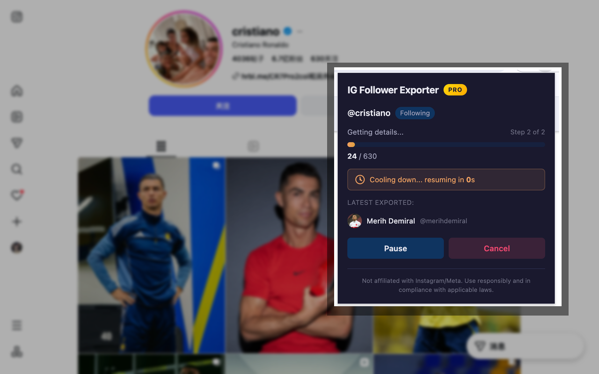
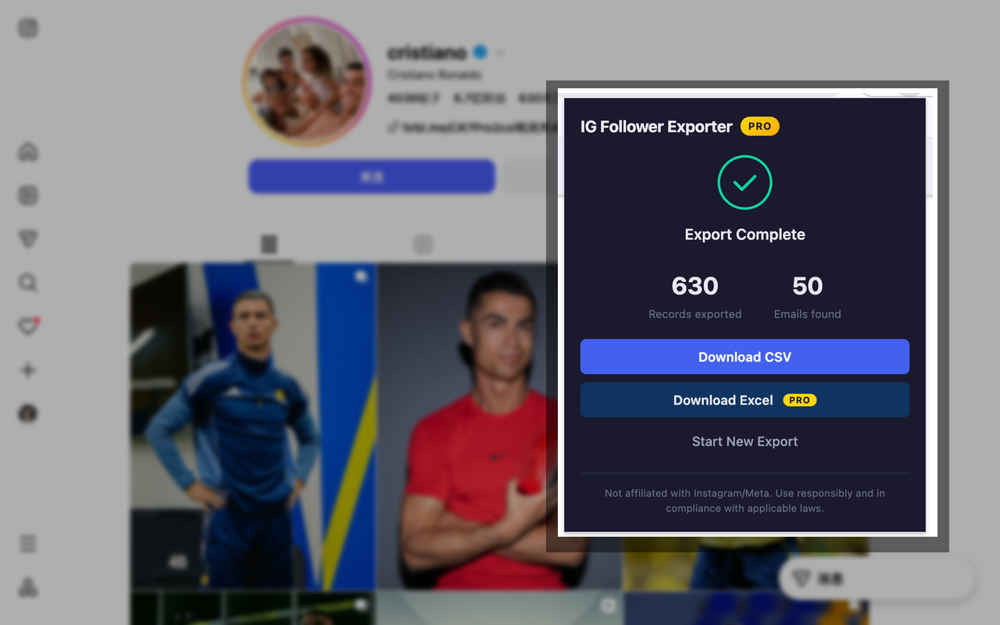

How to Export Instagram Followers to CSV
Before You Start
This guide is for marketers, creators, agencies, and researchers who need a spreadsheet of Instagram followers or following accounts for outreach, audience research, influencer review, or competitor audience analysis.
Use it responsibly. The workflow is designed for profiles and lists you can already view in your browser. It does not unlock private followers, override account blocks, or give access to hidden profile data.
Method 1: Export with a Browser Extension
A browser extension is the most direct method when you want a CSV file without writing code, setting up an API, or copying usernames by hand. IG Follower Exporter works from Instagram profile pages and exports either followers or following lists.
Step 1: Install IG Follower Exporter
Install the extension from the Chrome Web Store or Microsoft Edge Add-ons. You do not need to give ExtPilot your Instagram password.
Step 2: Open a Profile You Can Access
Open Instagram in the same browser and go to the profile you want to review. The extension can work with follower or following lists that are available to your logged-in browser session.
Step 3: Choose Followers, Following, and Export Mode
Open the extension popup, choose Followers or Following, then choose your export mode.
- Quick mode: best for a clean follower list with basic profile fields.
- Detailed mode: best when you need public profile details such as bio, website, public contact fields, follower count, following count, and business category when available.
Step 4: Start the Export and Wait for Progress
Click Start Export. The extension shows export progress and uses rate limiting to reduce the chance of hitting Instagram limits. Large lists can take longer because Instagram loads and returns data gradually.

Step 5: Download the CSV File
When the export finishes, download the CSV file. Pro users can also export to Excel when they need `.xlsx` format.

What Fields Can You Export?
The exact fields depend on the export mode and what Instagram makes publicly visible on each profile. If a profile does not publish a contact field, the exported CSV cannot invent it.
| Mode | Best for | Example fields | Limit |
|---|---|---|---|
| Quick mode | Fast follower or following list exports | Username, full name, profile URL, verified status, private status, profile picture URL | Basic plan supports up to 600 followers per export |
| Detailed mode | Outreach, audience research, influencer review | Quick fields plus public profile fields such as bio, website, public contact fields, post count, follower count, following count, and business category | Basic plan supports up to 50 profiles per export; Pro unlocks higher limits |
| Excel export | Teams that prefer `.xlsx` files | Same exported profile data in Excel format | Available on Pro |
Method 2: Manual Copy-Paste
Manual copy-paste can work if you only need a small number of usernames and do not care about structured fields.
- Open the Instagram profile.
- Open the Followers list.
- Scroll until the accounts you need are visible.
- Copy visible usernames into a spreadsheet.
- Clean up spacing and formatting manually.
This method is free, but it is slow and easy to misformat. It usually does not give you profile URLs, public contact fields, counts, or a ready-to-use CSV structure.
Method 3: Download Your Instagram Information
Instagram also offers official account data download tools. This is useful when you want a copy of your own account information, but it is not the same as exporting any public profile's follower list into a marketing spreadsheet.
For official instructions, use Instagram's own help resources for downloading account information and reviewing privacy controls. This method is best for personal account records, not competitor audience research or outreach lists.
Which Method Should You Use?
| Need | Recommended method | Why |
|---|---|---|
| Export a follower list to CSV quickly | Browser extension | Fast setup, structured CSV, no coding |
| Copy a few usernames | Manual copy-paste | No tool needed for a small sample |
| Keep a copy of your own Instagram account data | Instagram data download | Official account archive workflow |
| Build outreach or influencer research lists | Browser extension with Detailed mode | Exports structured fields when they are publicly available |
Privacy, Safety, and Limits
Follower export tools should be used carefully. IG Follower Exporter is designed around visible browser access, local processing, and rate-limited exports.
- It does not ask for your Instagram password.
- Export processing happens locally in your browser.
- Follower data is not uploaded to ExtPilot servers.
- It only works with lists and profile information your browser can access.
- It cannot override private accounts, blocks, or Instagram privacy restrictions.
- Public contact fields are only exported when Instagram exposes them on the profile.
- Large exports can be affected by platform rate limits.
Frequently Asked Questions
Can I export Instagram followers to CSV for free?
Yes. IG Follower Exporter includes a Basic plan that supports Quick mode CSV exports for up to 600 followers per export. Detailed mode and Excel export are part of the Pro workflow.
Can I export Instagram following instead of followers?
Yes. Open an Instagram profile, choose Following in the extension, then export the following list to CSV or Excel depending on your plan and export mode.
Can I export emails and phone numbers from Instagram followers?
Only when those public contact fields are available on the profile and your export mode supports detailed fields. The extension cannot reveal hidden private contact information.
Is this affiliated with Instagram or Meta?
No. IG Follower Exporter and ExtPilot are not affiliated with Instagram or Meta. Use the tool responsibly and follow applicable platform terms and local rules.
Where can I read the privacy policy?
You can read the IG Follower Exporter privacy policy at https://extpilot.com/privacy/ig-follower-exporter/.